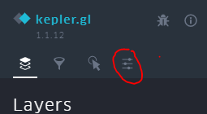

16. Visualización y publicación con Kepler GL

Web
Aplicación
Página referéncia Kepler GL
GitHUB
Tutoriales
- https://github.com/keplergl/kepler.gl/blob/master/docs/user-guides/a-introduction.md
- https://github.com/keplergl/kepler.gl/blob/master/docs/user-guides/j-get-started.md
Videos
- https://www.youtube.com/watch?v=b8wKEY4dlvg
- https://www.youtube.com/watch?v=y-SA6bOv4Eo
- https://www.youtube.com/watch?v=i2fRN4e2s0A
Descripción
Kepler.gl es una aplicación desrrollada por Uber, en un principio para uso interno, para analizar y visualizar sus propios datos.
Esta basada en WebGL pensada para la exploración visual de conjuntos de datos de geolocalización a gran escala. Construido en la parte superior de deck.gl, kepler.gl puede representar millones de puntos que representan miles de viajes y realizar agregaciones espaciales sobre la marcha.

Ejercicio de visualización con Kepler.gl
Queremos analizar los accidentes de coche en la ciudad de Barcelona
Hemos visto este post en Medium, sobre accidentes de Barcelona https://towardsdatascience.com/analysis-of-car-accidents-in-barcelona-using-pandas-matplotlib-and-folium-73384240106b
Preparación datos
-
Origen dataset CSV de Personas involucradas en accidentes gestionados por la Guardia Urbana en la ciudad de Barcelona
-
Descargamos 2018_accidents_tipus_gu_bcn_.csv
-
En este archivo se han concatenado las fechas para añadir un nuevo campo tipo timestamp
Con LibreOffice seria
=CONCATENATE(L2;"-";M2;"-";O2;"T";Q2;":00")
Paso1 : Añadir datos el mapa
-
Vamos a http://kepler.gl/#/demo
-
Cargamos 2018_accidents_tipus_gu_bcn_TIME.csv
Añadimos csv

Paso2 : Añadimos estilo própio

Base map -->add Map Style --> Paste style url
Paso2 : Añadir capas
-
Añadimos tres capas de tipo Punto,Hexbin, HeatMap
-
Ejemplo para HexBin
Add Layer: Type HexbinColumns: Latitud LonguitudColor: Scale QuantizeHexagon radius 0.1Coverage 0.75

- Visualizamos su capacidades y realizamos temàticos
Paso1 : Añadir filtros
- Permite filtrar los datos de todas las capa asociadas a un dataset

- Por dia de la semana
- Por el campo Time
Paso1 : Definir "tooltips"

Paso1 : Guardar y exporta a HTML


 * Exportamos nuestro mapa a formato HTML accidentes.html dentro de nuestro proyecto /geoweb
* Exportamos nuestro mapa a formato HTML accidentes.html dentro de nuestro proyecto /geoweb
Paso1 : Subir al GIT
¿Subimos el ejemplo al GitHub?
git pull
git add .
git commit -m "Mapa Kepler"
git push
Mirámos Medium